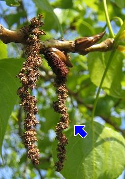

|
|  | Die Schwarzpappel blüht im März und April, lange bevor die Blätter austreiben.
Männliche und weibliche Blüten wachsen auf getrennten Bäumen.
Die Blüten sind sehr klein. Sie bilden lange hängende Blütenstände. Wir nennen sie Kätzchen.
Sie werden vom Wind bestäubt.
Die verblühten männlichen Kätzchen bleiben oft noch lange am Baum hängen.
|